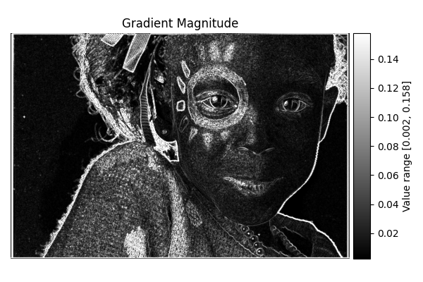
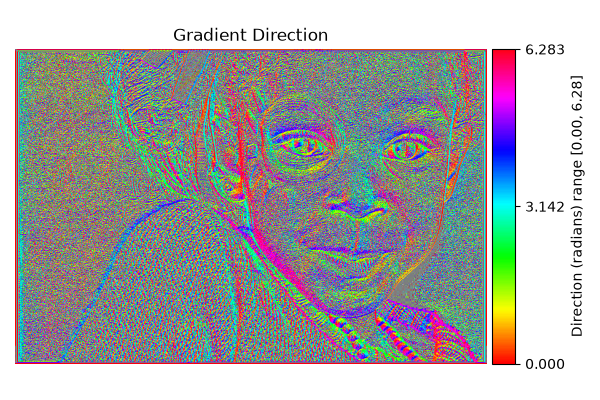
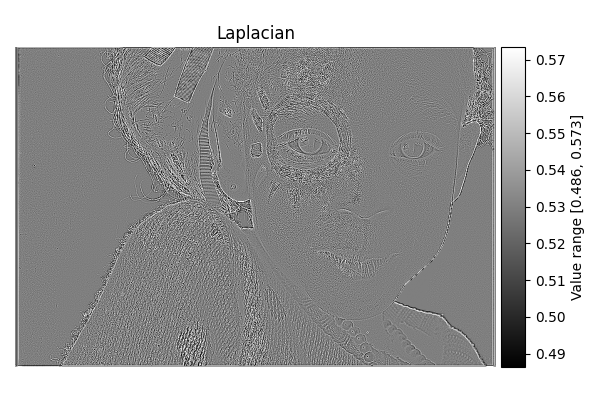
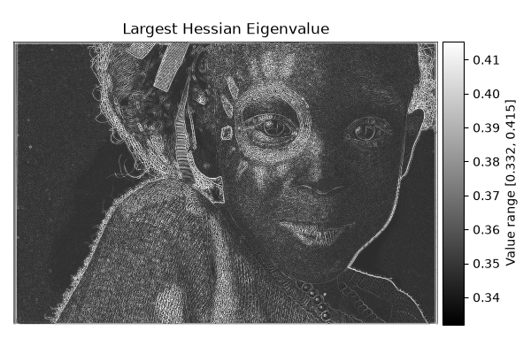
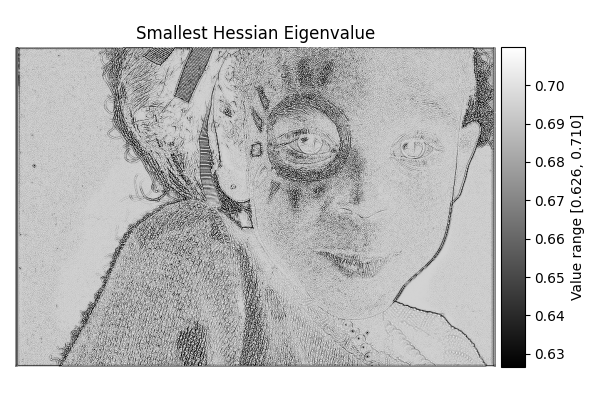
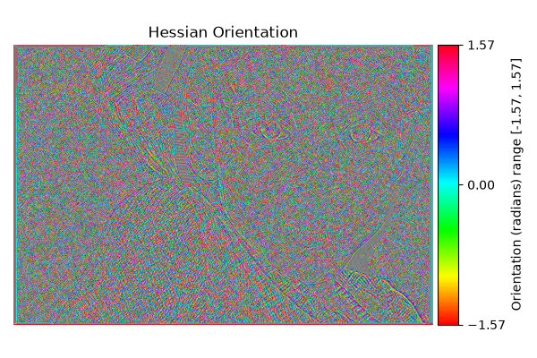

Differentials Module#
In this example, we demonstrate how to use the differentiate module to compute different differential operations on an image.
Imports#
import numpy as np
import matplotlib.pyplot as plt
from mpl_toolkits.axes_grid1 import make_axes_locatable
from urllib.request import urlopen
from PIL import Image
# Import the Differentials class from your module (adjust import path as needed)
from splineops.differentials.differentials import differentials
Data Preparation#
We retrieve an example color image, convert it to grayscale, and normalize its intensities to the [0,1] range.
url = 'https://r0k.us/graphics/kodak/kodak/kodim15.png'
with urlopen(url, timeout=10) as resp:
img = Image.open(resp)
image = np.array(img, dtype=np.float64)
# Convert to [0,1]
image_normalized = image / 255.0
# Convert to grayscale via simple weighting
image_gray = (
image_normalized[:, :, 0] * 0.2989 +
image_normalized[:, :, 1] * 0.5870 +
image_normalized[:, :, 2] * 0.1140
)
Helper Visualization Functions#
def show_result_with_colorbar(title, result, units="Value", percentile_range=(5, 95)):
"""
Displays a 2D result with a colorbar scaled using the given percentile range.
Parameters
----------
title : str
Title for the plot.
result : ndarray
2D array representing the image or field to display.
units : str
Label for the colorbar (e.g., 'Intensity', 'Radians', etc.).
percentile_range : tuple or None
Percentiles to use for scaling the colormap. If None, use the min and max of the data.
"""
h, w = result.shape
aspect_ratio = h / float(w)
fig_width = 6.0
fig_height = fig_width * aspect_ratio
fig, ax = plt.subplots(figsize=(fig_width, fig_height))
# Determine vmin and vmax based on percentiles if provided
if percentile_range is not None:
pmin, pmax = np.percentile(result, percentile_range)
im = ax.imshow(result, cmap='gray', aspect='equal', vmin=pmin, vmax=pmax)
cbar_label = f"{units} range [{pmin:.3f}, {pmax:.3f}]"
else:
vmin, vmax = result.min(), result.max()
im = ax.imshow(result, cmap='gray', aspect='equal', vmin=vmin, vmax=vmax)
cbar_label = f"{units} range [{vmin:.3f}, {vmax:.3f}]"
ax.set_title(title)
ax.axis('off')
# Create a colorbar with matching height using make_axes_locatable
divider = make_axes_locatable(ax)
cax = divider.append_axes("right", size="5%", pad=0.05)
cbar = plt.colorbar(im, cax=cax)
cbar.set_label(cbar_label)
plt.tight_layout()
plt.show()
def show_angle_result(title, angle_data, vmin, vmax, units="Radians"):
"""
Displays angle data in a cyclical color map (hsv), with vmin and vmax specifying
the circular range.
Parameters
----------
title : str
Title for the plot.
angle_data : ndarray
2D array of angles (in radians).
vmin : float
Minimum of angle range (e.g., 0).
vmax : float
Maximum of angle range (e.g., 2*pi).
units : str
Label for the colorbar (e.g., 'Direction (radians)', etc.).
"""
h, w = angle_data.shape
aspect_ratio = h / float(w)
fig_width = 6.0
fig_height = fig_width * aspect_ratio
fig, ax = plt.subplots(figsize=(fig_width, fig_height))
# Plot with an HSV cyclical colormap
im = ax.imshow(angle_data, cmap='hsv', aspect='equal', vmin=vmin, vmax=vmax)
ax.set_title(title)
ax.axis('off')
# Add colorbar
divider = make_axes_locatable(ax)
cax = divider.append_axes("right", size="5%", pad=0.05)
cbar = plt.colorbar(im, cax=cax, ticks=[vmin, (vmin+vmax)/2, vmax])
cbar.set_label(f"{units} range [{vmin:.2f}, {vmax:.2f}]")
plt.tight_layout()
plt.show()
Show the original grayscale image with a colorbar
show_result_with_colorbar("Original Image", image_gray, units="Intensity")
Gradient Magnitude#
diff = differentials(image_gray.copy())
diff.run(differentials.GRADIENT_MAGNITUDE)
grad_magnitude_result = diff.image
show_result_with_colorbar("Gradient Magnitude", grad_magnitude_result, units="Value")

Completed in 1.17 seconds
Gradient Direction#
diff = differentials(image_gray.copy())
diff.run(differentials.GRADIENT_DIRECTION)
grad_direction_result = diff.image
# Shift from [-π, π] to [0, 2π]
grad_direction_result_0_2pi = (grad_direction_result + 2.0*np.pi) % (2.0*np.pi)
# Visualize with HSV colormap, removing percentile clipping
show_angle_result(
"Gradient Direction",
grad_direction_result_0_2pi,
vmin=0.0, vmax=2.0*np.pi,
units="Direction (radians)"
)

Completed in 1.19 seconds
Laplacian#
diff = differentials(image_gray.copy())
diff.run(differentials.LAPLACIAN)
laplacian_result = diff.image
show_result_with_colorbar("Laplacian", laplacian_result, units="Value")

Completed in 1.37 seconds
Largest Hessian#
diff = differentials(image_gray.copy())
diff.run(differentials.LARGEST_HESSIAN)
largest_hessian_result = diff.image
show_result_with_colorbar("Largest Hessian Eigenvalue", largest_hessian_result, units="Value")

Completed in 2.56 seconds
Smallest Hessian#
diff = differentials(image_gray.copy())
diff.run(differentials.SMALLEST_HESSIAN)
smallest_hessian_result = diff.image
show_result_with_colorbar("Smallest Hessian Eigenvalue", smallest_hessian_result, units="Value")

Completed in 2.65 seconds
Hessian Orientation#
diff = differentials(image_gray.copy())
diff.run(differentials.HESSIAN_ORIENTATION)
hessian_orientation_result = diff.image
show_angle_result(
"Hessian Orientation",
hessian_orientation_result,
vmin=-np.pi/2.0, vmax=np.pi/2.0,
units="Orientation (radians)"
)

Completed in 2.64 seconds
Total running time of the script: (0 minutes 12.799 seconds)